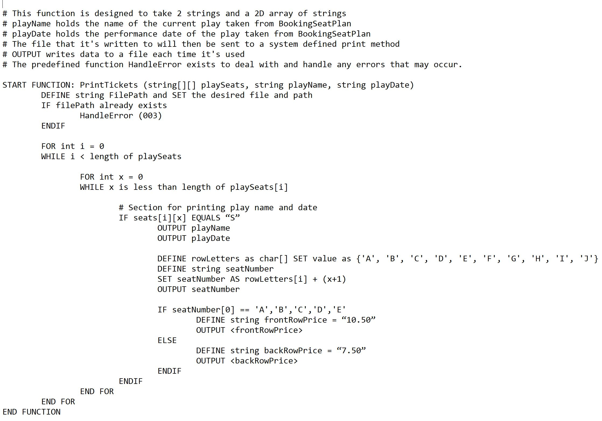
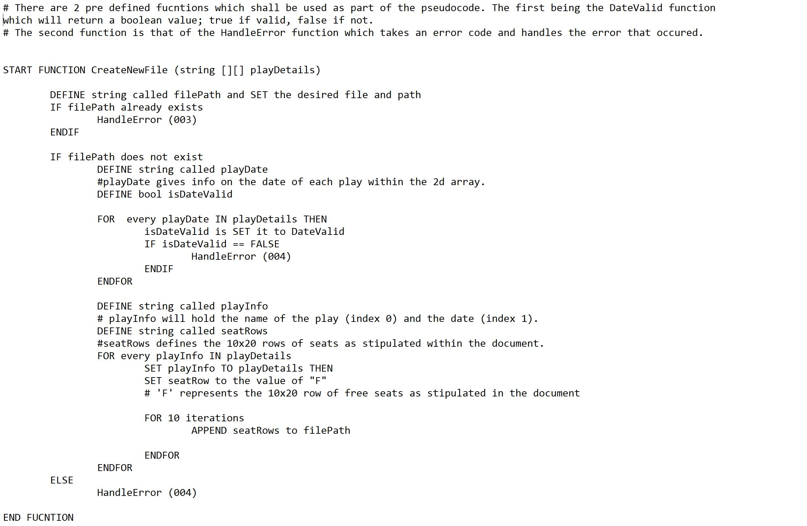
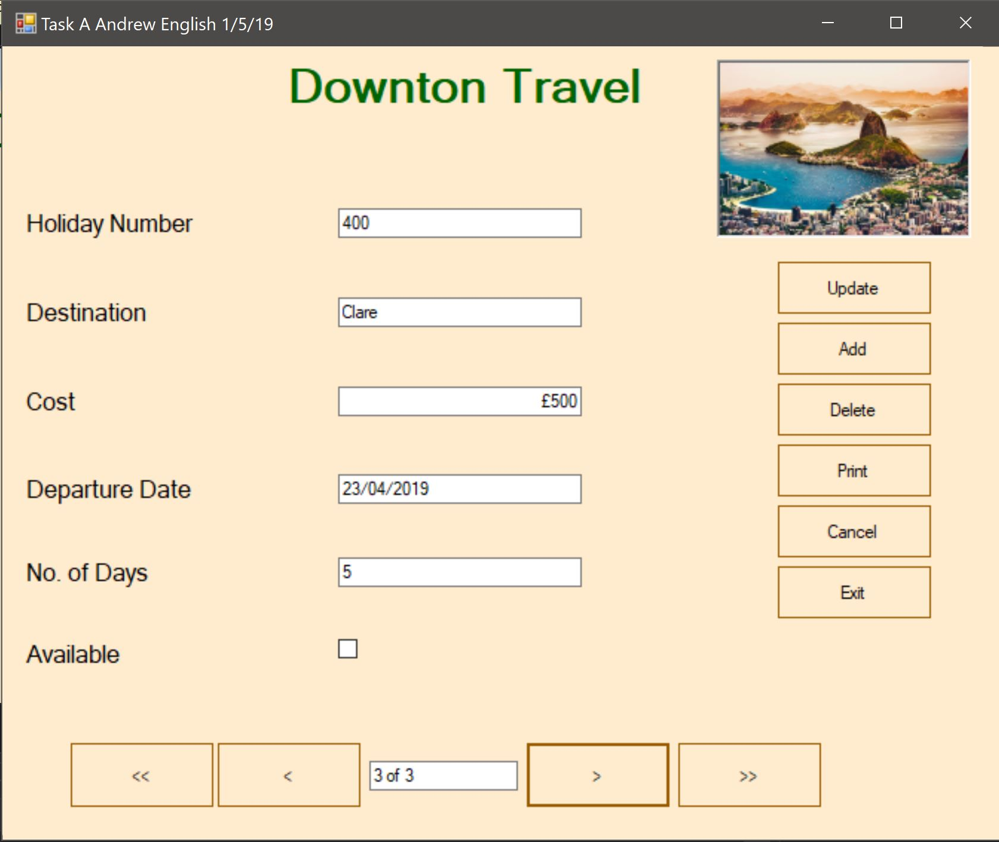
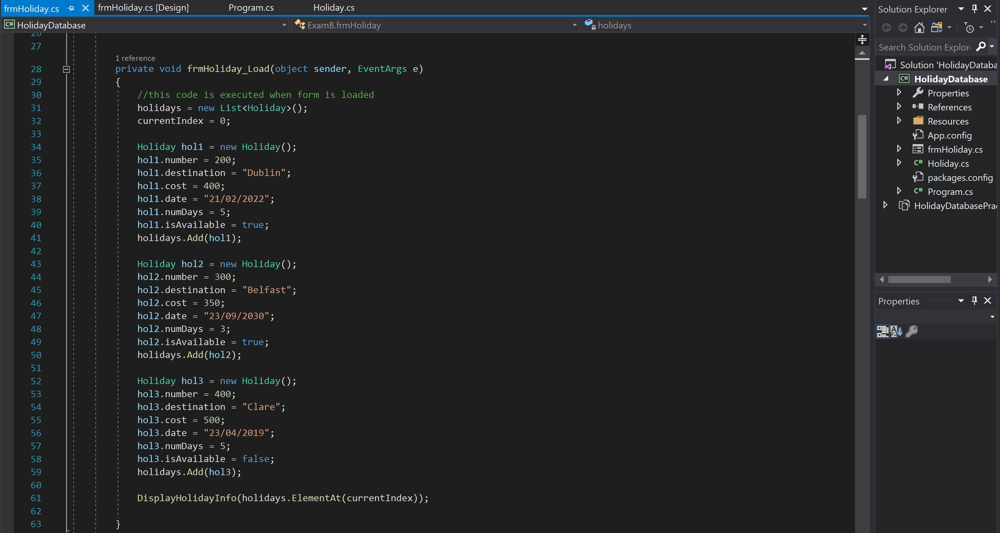
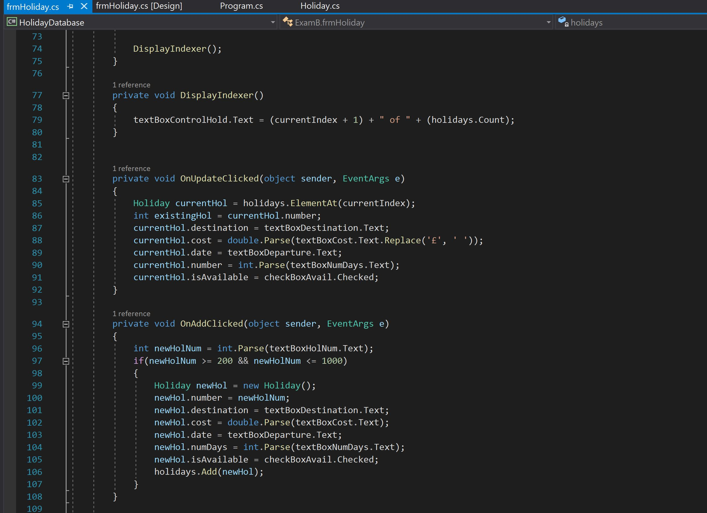

Here's a selection of some of my recent work. It includes, tests, assignments, projects, collaborations and
presentations.
Check back regularly for more updates.
Pseudocode


This was the first test I had during the programme. Learning a new language with C# was difficult enough
never mind trying to
get to grips with Pseudocode. After several attempts and a crash course on Pseudocode lingo, I eventually
got the hang of it
and understood why this is such an important part in the planning stage of writing clear and concise code.
Togehter with one of my
classmates, we produced the Pseudocode you can see above.
Basic Object Oriented Programming with C#



The C# examination was one of hardest exams I've done in all my years of education. Despite being well
prepared, it was unlike any other
exam I've ever sat. Throughout the module, we became accustomed with classes, methods and functions. We
worked through for loops, arrays
and if statements. The funny thing is, we've only scratched the surface of this hugely powerful language. In
semester 2, we delve further
into the world of C# and Object Oriented Programming. The photos above are from a practice test I did for
our exam earlier in the year.
Principles of ICT Systems and Data Security
Whilst not a programming module per se, I found this module hugely beneficial on many fronts. Discussing
areas surrounding
malware, encryption and data security is not only beneficial for work place environments, but also in every
day aspects of our lives.
As a class, we were afforded the opportunity to work together and make presentations on various topics. My
classmate Bryan Donnelly and
I presented on encryption and hash functions. From the video you can see above, we demonstrated the process
of a dictionary attack on
over 14 million passwords. Below you can also see a copy of the presentation we made in front of our tutor
and classmates.
With the SQL database module, we learned how to navigate throguh a relatively small database using commands
such as "SELECT", "WHERE,
"IN", "FROM" and "TO". We also became accustomed with inner joins and nested selects too. I really enjoyed
this module and I look forward
to the semester 2 database module where we go a little bit more in depth in relation to how databases are
actally created. The photos above
are snippet coppies of the SQL database exam we had earlier this year.
Web Worker
Count Numbers:
Above is a demonstration of a simple web worker as required for the web assignment submission. Normally web
workers aren’t used for such simple
scripts, but for more CPU intensive tasks.